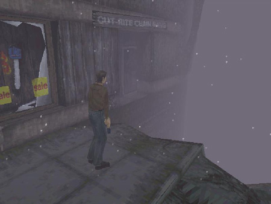
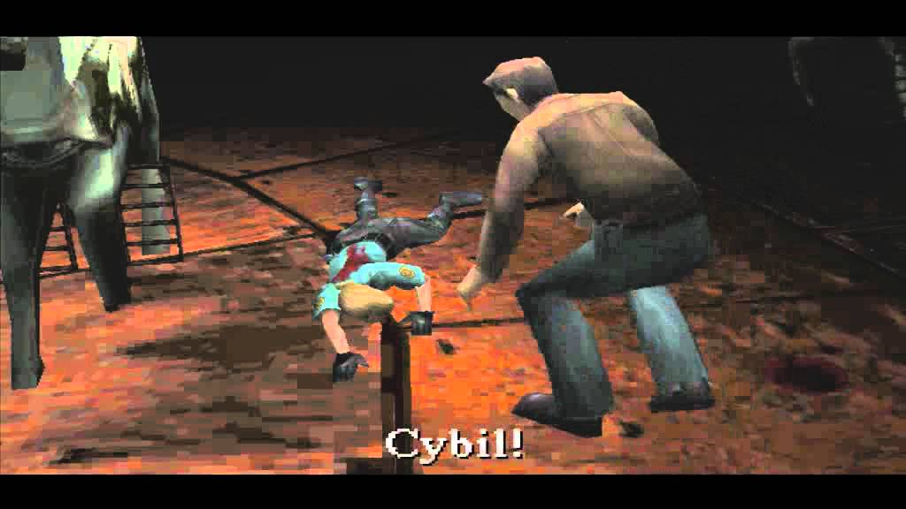
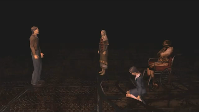
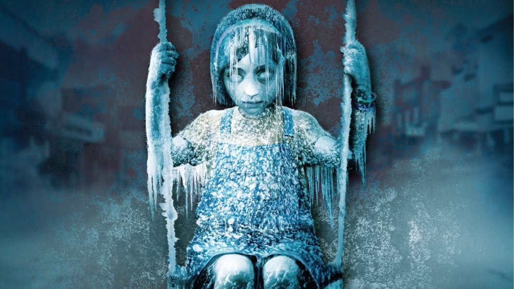
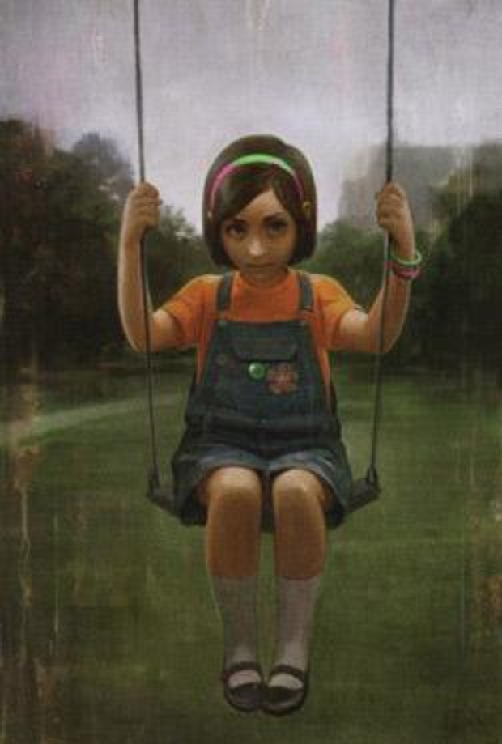

Silent Hill 1
Harry Mason, un escritor de 32 años, es convencido por su hija Cheryl de pasar unas vacaciones en Silent Hill; mientras conduce a las afueras del pueblo, Harry desvía su coche para evitar golpear a una niña que se aparece de la nada en la carretera. Como resultado, estrella su vehículo y pierde el conocimiento. Tras esto, despierta en el pueblo y conoce a Cybil Bennett, una oficial de policía que trabaja en una ciudad cercana, además de darse cuenta de que su hija Cheryl ha desaparecido. La ciudad de Silent Hill está desierta y cubierta de niebla, con nieve cayendo fuera de temporada y monstruos hostiles vagando por las calles.

Harry conoce a algunas personas durante su aventura, entre ellas: Dahlia Gillespie, quien lo guía por el pueblo y le entrega el Flauros, un artefacto encantado; el doctor Michael Kaufmann, director del Hospital Alchemilla de Silent Hill; y la enfermera Lisa Garland, que trabaja en Alchemilla. Harry también se encuentra con un símbolo esparcido por toda la ciudad. Dahlia afirma que el pueblo acabará sumido en la oscuridad si el símbolo continúa extendiéndose. Finalmente, esta oscuridad empieza a apoderarse de Silent Hill, y de acuerdo con Gillespie, la responsable del símbolo y de su multiplicación es la chica que Harry vio en la carretera. Así, Dahlia lo insta a detenerla, pues si no lo hace, Cheryl morirá. Más tarde, Harry es atacado por Cybil, quien está infectada por un parásito; el jugador debe elegir si salvarla o no.

Finalmente, la chica es alcanzada por Harry y atrapada por el Flauros. Dahlia entonces aparece, revelando que ha manipulado a Harry para que atrape a la niña ya que él es el único que podía acercarse a ella sin que representara una amenaza; además, revela que la niña atrapada es su propia hija, Alessa. Tras lo sucedido, Harry despierta en un lugar sin lógica aparente conocido como «Nowhere» donde vuelve a encontrarse con Lisa, la cual se ha dado cuenta que es «igual que ellos» y empieza a transformarse frente a Harry, quien huye horrorizado. Posteriormente, Harry vuelve a encontrarse con Dahlia, Cheryl y Alessa; la verdad es entonces revelada.

El pueblo de Silent Hill alberga un culto dedicado al dios-demonio Samael. El culto igualmente, fabrica y distribuye una droga alucinógena llamada PTV para obtener ingresos. Algunos miembros, sin embargo, tenían otra meta: dar a luz al dios y traer consigo un paraíso eterno. Hace siete años, Dahlia Gillespie, una de los miembros más influyentes del culto, pretendió impregnar a su hija Alessa, quien tiene poderes psíquicos, con la semilla del dios. El proceso del ritual de impregnación, llevado a cabo en casa de los Gillespie, involucró una gran cantidad de fuego, que consecuentemente incrementó por el estrés de Alessa que aumentó sus poderes psíquicos a tal punto que acabó por incendiar la casa. Alessa terminó severamente quemada, por lo que fue hospitalizada en secreto en el sótano del Hospital Alchemilla y el doctor Kaufmann asignó a Lisa a cuidar de la niña. Alessa además, en oposición al objetivo del culto, dividió su alma en dos durante el incendio, haciendo que el plan no pudiese tener éxito con solo media alma. La otra mitad de esta apareció en forma de bebé, quien fue encontrada y adoptada por Harry Mason, a la que llamó Cheryl.

En el presente, Cheryl es atraída a Silent Hill por medio de un hechizo usado por el culto, quienes buscan reunir las almas. Alessa, sintiendo el regreso de Cheryl, comienza a usarla para cubrir al pueblo en los símbolos que Harry ha visto, llamado «sello de Metatrón», los cuales tenían como propósito contrarrestar las fuerzas del dios y así evitar el nacimiento. Al extender el sello, Alessa involuntariamente proyecta el mundo de pesadilla en que vivió durante los siete años que estuvo hospitalizada. Dahlia revela que también le mintió a Harry acerca del símbolo, pues ella sabía que éste era aparentemente repelente. Así, con el plan de Alessa frustrado y su alma reunificada, la deidad dentro de su cuerpo es revivida.

La empresa "Konami"
Konami Holdings Corporation (コナミホールディングス株式会社 Konami Hōrudingusu Kabushiki-gaisha?), o simplemente Konami, es una empresa de desarrollo de juguetes, cartas coleccionables, anime, tokusatsu, máquinas tragaperras y videojuegos. Fue fundada en 1969 como un negocio de reparación y de jukeboxes en Osaka, Japón, por Kagemasa Kozuki, quien es todavía su presidente y director ejecutivo.
El nombre "Konami" es una conjunción de los nombres Kagemasa Kozuki, Yoshinobu Nakama, Hiro Matsuda, y Shokichi Ishihara, quienes fueron los socios de Kozuki y los fundadores originales de Konami Industry Co., Ltd en 1973. Konami también significa «olas pequeñas». Tiene actualmente sus bases en Tokio y adicionalmente opera clubes de salud y ejercicio en Japón.
Konami ha sido el responsable de la creación de 6 de las franquicias más exitosas en la historia de los videojuegos: Castlevania, Contra, Metal Gear Solid, Silent Hill, Dance Dance Revolution (que fue el parte aguas para la creación de este tipo de juegos como Pump It Up de Andamiro) y Pro Evolution Soccer (desde su primer videojuego, International Superstar Soccer), así como ser la creadora de videojuegos exitosos, basados en series, caricaturas y películas, tales son los casos de los videojuegos de las caricaturas Tiny Toon Adventures, Animaniacs y Tortugas Ninja, así como el videojuego Batman Returns, basado en la película homónima, y haber desarrollado el considerado mejor videojuego de arcade de todos los tiempos: The Simpsons Arcade Game. Aunado a eso, también ha sido la creadora de la franquicia de cartas coleccionable de Yu-Gi-Oh!, basados en el popular ánime japonés, logrando un gran éxito (y ser la única que le pudo hacer frente al éxito del también juego de cartas Magic: El encuentro).
Pagina oficial de Konami(Games)